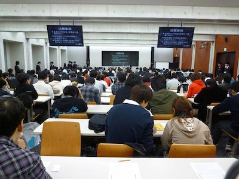
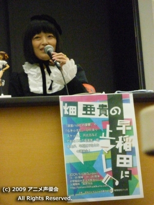

「畑 亜貴の早稲田に“止マレ！”」
畑 亜貴の早稲田に“止マレ！”速報レポート
こんばんは。書記の押尾です。
本日は畑 亜貴の早稲田に“止マレ！”を有限会社ジェオ様にご協力いただき、当会で開催させていただきました！！ご来場いただいた皆様、誠にありがとうございました。本日はお楽しみいただけましたでしょうか？
今回はご来場くださった皆さんのおかげで大盛況となりました。事前応募の優先入場券とは別にかなりの数の整理券をご用意させていただいたのですが、全てお配りすることができました！！入場することができなかったお客様、大変申し訳ございませんでした。
今回は畑 亜貴さんをお呼びするということで、質問や好きな曲を皆さんに事前募集して、その中から抜粋、編集した形で畑さんに質問させていただきました。（みのりん除く（笑））
インディーズのＣＤやアニメソング、声優の楽曲の質問コーナーでは、誰もが気になる制作の裏側曲による作詞の仕方の違いなどをお聞きしました。観客の皆さんにもお喜びいただけたようで、扉の外にまでその歓声が響き渡っていたようです。当会会員も皆さんの歓声を聞くことができ、今までの準備段階での疲れが一気に吹っ飛ぶ思いが致しました。今回の目玉イベントでもある『畑先生の作詞教室』での作詞に対する畑さんの講評では、私たち素人の詩の読み方、感じ方とは違ったプロの作詞家としての歌詞の読み方を畑さんの解説付きでお聞きし先ほどのコーナーでの親しみやすい畑さんとは、また一味違った畑さんの姿を見ることができました。皆さんにお寄せいただいた詞も大変レベルの高いものが多かったようで、畑さんにも本当に喜んでいただきました。皆さんご協力ありがとうございました！！
最後に皆さんにお寄せいただいた、楽曲のランキングを発表して今回のイベントは終了となるはずでしたが・・・
なんと！ 畑さんのご配慮で急きょ質問コーナーを設けさせていただきました。本当に急でしたので、司会と進行は涙目な状態ではありましたが（笑）お客様に喜んでいただけたようで何よりでした。畑さんの機転には本当に頭が下がる思いです。
畑さん、お忙しいスケジュールの中ご参加いただいて大変ありがとうございました！！
また、観客の皆様も司会の二人のつたない進行を笑顔で応援してくださり、紙幅では語りきれないほど、当会一同、誠に感謝しております！
一日程度では今回のイベントの総括は語りきれませんので、後日、アニメ声優会の公式レポートにて詳細な内容を公開いたします。
最後になりますが、7日、8日と当会のイベントにお越しくださった皆様、本当にありがとうございました！また来年も今年に劣らない、最高のイベントを開催したいと考えておりますので、何とぞ、よろしくお願い申し上げます！！！
更新代行 広報 えでん